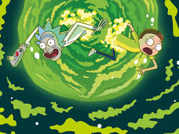

This is a large heading
This is a smaller heading
This is the smallest heading
A strong word and an italic word
An unordered list with style applied to descendant selectors ul li:
An ordered list:
- foo
- bar
- oranges

| Ocean |
Average Depth |
Maximum Depth |
| Pacific |
4280m |
10911m |
| Atlantic |
3646m |
8486m |